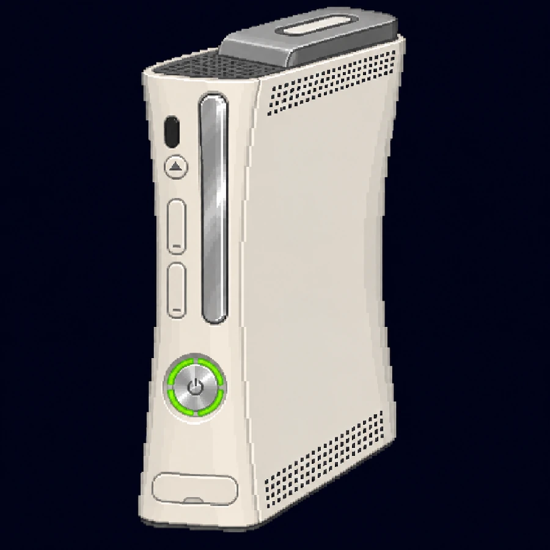
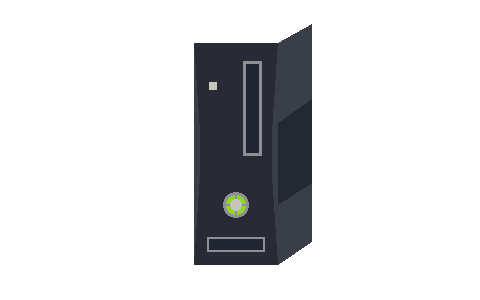

الأصلي · Premium
هيكل أبيض منحني، ودرج فضي، وفتحتا ذاكرة في الواجهة. القرص الصلب الخارجي متصل بأحد طرفي الجهاز.
SHAWQ AWAR / 08
جولة حول Premium، من منافذ الواجهة إلى اللوحة الرئيسية. اختر زاوية، ثم اضغط إحدى نقاط الرسم لتقرأ عن الجزء الذي تشير إليه.

هيكل أبيض منحني، ودرج فضي، وفتحتا ذاكرة في الواجهة. القرص الصلب الخارجي متصل بأحد طرفي الجهاز.

هيكل أسود أعيد تصميمه، مع قرص صلب داخلي واتصال Wi-Fi مدمج. الرسمان توضيحيان.
فصل الطبقات توضيحي. تُبرز الرسوم الوحدات الرئيسية، وقد تختلف تفاصيلها بين مراجعات الجهاز.